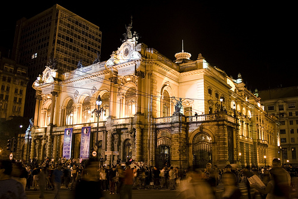
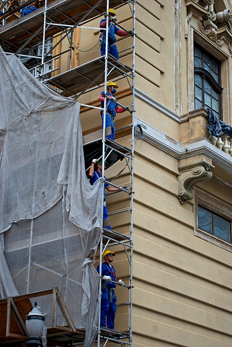

El Teatro Municipal renace de sus cenizas
Por: Marianne Blanco Dejardin 
La Municipalidad Metropolitana de Lima por fin anunció lo que todos esperaban: a más tardar en dos meses empezará la restauración y puesta en valor del Teatro Municipal, uno de los monumentos más representativos de la ciudad que hace diez años fue destruido por las llamas de un incendio. Emilima, la Empresa Municipal Inmobiliaria de Lima, anuncia inicio de trabajos en dos meses. Flor De María Valladolid, directora del proyecto de reconstrucción del Teatro Municipal, dijo que será financiado por los ingresos del Circuito Mágico del Agua.
Acerca del incendio y la restauración
Hace 10 años, un incendio producido durante una prueba de sonido para un concierto de Eva Ayllón destruyó el Teatro Municipal, un edificio de estilo neoclásico que era uno de los monumentos históricos más importantes de Lima. Desde entonces se prometieron millonarias donaciones e inversiones, se crearon instituciones para buscar soluciones y se habló de varios proyectos que nunca se ejecutaron. Sin embargo, aparentemente esta etapa de incertidumbre que nos colocaba en la saga cultural de Sudamérica ha terminado. La arquitecta Flor de María Valladolid, presidenta de Emilima y gerenta del proyecto de restauración del Teatro Municipal, anunció que los trabajos de reconstrucción se iniciarán dentro de dos meses. 
La labor de ingeniería del expediente técnico estuvo a cargo de Invermet (Instituto de Inversiones Metropolitano) y tuvo dos supervisores en la parte técnica: el grupo Casabone y la Facultad de Arquitectura de la UNI. Ésta también supervisó lo que será el delicado trabajo de restauración.
La fase inicial del proyecto que corresponde a la reconstrucción del teatro, la restauración de la caja escénica y la construcción de un estacionamiento para 150 vehículos que tendrán un costo de 30 millones de soles y se predice que estará lista en 18 meses, aproximadamente. La ejecución de este esperado trabajo estará financiado por los ingresos que genera el Circuito Mágico del Agua del Parque de la Reserva.
El incendio de 1998 no dañó la estructura del teatro, pero todo el exterior fue destruido por las llamas. Valladolid dijo que: "El proceso de restauración es lo más delicado que tiene el teatro y es lo que requiere más tiempo. La restauración es un trabajo manual artístico para que la parte incendiada quede como antes. La restauración comprende el tratamiento y el revestimiento de todos los detalles, como frisos y paramentos. Hicimos todos los